O algoritmo LMS
Conteúdo
O algoritmo LMS¶
O algoritmo steepest descent¶
Em aulas anteriores, aprendemos a fazer a regressão linear multivariada. Conhecendo-se o conjunto de dados de treinamento
o objetivo da regressão linear multivariada é obter um modelo de hiperplano do tipo
em que \(N_t\) é o número de dados utilizados no treinamento, \(b\) o viés (bias), \(d\) o sinal desejado, \(x\) o sinal de entrada e \(w_k\), \(k=1,\cdots, M\) os pesos do regressor.
Para obter o modelo, utilizamos os dados de treinamento e calculamos a solução
em que
Essa solução \(\mathbf{w}^{\rm o}\) minimiza a norma ao quadrado do vetor de erros, que aqui chamamos de \(J(\mathbf{w})\), ou seja,
de modo que \(\mathbf{w}^{\rm o}=\min_{\mathbf{w}} J(\mathbf{w})\).
Cabe observar que o regressor é obtido a partir da matriz \(\mathbf{X}\) e do vetor \(\mathbf{d}\) que levam em conta todos os dados de treinamento, \(N_t\) no caso. O regressor também pode ser obtido a partir de um treinamento iterativo, em que cada amostra \((x_{1k}, x_{2k}, \cdots, x_{Mk} ,d_k),\) \(k=1,2,\cdots, N_t\) é apresentada a um algoritmo por vez. Para obter esse algoritmo, vamos primeiramente atribuir um índice ao vetor de pesos que se pretende obter. Assim,
representa o vetor de pesos da iteração \(n\) do algoritmo. Vamos fazer o mesmo com os dados de treinamento. Dessa forma, na iteração \(n\), teremos o sinal desejado \(d(n)=d_n\), \(n=1,2,\cdots,N_t\) e o vetor de entrada
O sinal de “saída” desse regressor iterativo é então dado por
em que \(\mathbf{w}(0)=\mathbf{0}\). É importante observar que como se trata de um algoritmo iterativo, precisamos inicializar o vetor de pesos. Uma possibilidade é considerar o vetor nulo, embora também seja possível inicializar os pesos de forma aleatória.
Na regressão linear multivariada, o melhor hiperplano é obtido ao se minimizar a norma ao quadrado do vetor de erros, ou seja, \(J(\mathbf{w})=\|\mathbf{e}\|^2\), que é comumente chamada de função custo. Aqui, devemos fazer algo semelhante. No entanto, não dispomos de um vetor de erros, pois estamos buscando uma solução de forma iterativa, mas podemos calcular o erro de ``estimação’’ em cada iteração, ou seja,
Assim, podemos ajustar os pesos para minimizar o erro quadrático médio (do inglês mean-square error - MSE), definido como
em que \({\rm E}\{\cdot\}\) representa o operador esperança matemática. Para minimizar essa função custo, como no caso da regressão linear multivariada, devemos primeiramente derivá-la em relação ao vetor de pesos, o que leva ao vetor gradiente da função custo em relação a \(\mathbf{w}\), ou seja,
Igualando o vetor gradiente ao vetor nulo, obtemos
ou ainda
A solução dessa equação leva ao MSE mínimo e é conhecida na literatura como solução de Wiener-Hopf, ou simplesmente, solução de Wiener. Por isso, vamos denotá-la como \(\mathbf{w}^{\rm wiener}\), ou seja,
em que \(\mathbf{R}\) é a matriz de autocorrelação dos dados de entrada e \(\mathbf{p}\) o vetor de correlação cruzada entre o sinal desejado \(d(n)\) e os dados de entrada. Tanto a matriz \(\mathbf{R}\) como o vetor \(\mathbf{p}\) têm em suas definições o operador esperança matemática. Podemos estimar \(\mathbf{R}\) e \(\mathbf{p}\) utilizando todos os dados de treinamento, o que leva respectivamente a
Neste caso, a solução obtida com a regressão linear multivariada coincide com a solução de Wiener, ou seja, \(\mathbf{w}^{\rm o}=\mathbf{w}^{\rm wiener}\). Além disso, essa solução é única para um dado conjunto de treinamento.
Ao acompanhar esse cálculo, você pode estar se perguntando: onde está o algoritmo iterativo para o cálculo dos pesos? Ele pode ser obtido utilizado o método do gradiente. Em Cálculo, aprendemos que o gradiente de uma função aponta para a direção de maior variação da função. Como a solução é única, basta considerar o sentido contrário do gradiente, o que leva a
em que \(\eta\) é um passo de adaptação. Substituindo a expressão do gradiente, chega-se a
ou ainda
Identificando a matriz \(\mathbf{R}\) e o vetor \(\mathbf{p}\) na equação acima, obtemos
Esse algoritmo iterativo é conhecido na literatura como \textit{steepest descent algorithm} ou algoritmo do gradiente exato. O passo de adaptação \(\eta\) tem um papel fundamental em sua convergência. É possível demonstrar que se o intervalo \(0<\eta<2/{\lambda_{\max}}\) for atendido, em que \(\lambda_{\max}\) é o autovalor máximo da matriz \(\mathbf{R}\), essa equação converge exatamente para a solução de Wiener. Apesar de chegar exatamente à solução que minimiza o MSE, ele não é adequado porque é necessário conhecer \(\mathbf{R}\) e \(\mathbf{p}\). A única vantagem é evitar calcular a inversa da matriz \(\mathbf{R}\), o que representa uma economia em custo computacional.
O algoritmo LMS¶
Uma maneira de simplificar os cálculos para evitar ter de conhecer \(\mathbf{R}\) e \(\mathbf{p}\), é estimar essas grandezas instantâneamente, o que leva respectivamente a
Substituindo essas aproximações no algoritmo \textit{steepest descent}, chega-se a
que é a equação de atualização do conhecido algoritmo LMS (least-mean-square), cujo sumário está mostrado na Tabela 1. O fluxo de sinal do LMS é mostrado na Fig. 4. Novamente, o passo de adaptação \(\eta\) tem um papel fundamental na convergência desse algoritmo. Quanto menor o valor de \(\eta\), mais próximo da solução de Wiener o algoritmo LMS estará quando atingir o regime estacionário. No entanto, quanto menor o passo, mais lentamente o algoritmo atingirá o regime. Em contrapartida, passos grandes podem representar convergências rápidas, mas também podem levar o algoritmo à divergência. Neste caso, os pesos podem ir para infinito\footnote{Infinito aqui significa valor acima do maior valor representável em um software numérico ou hardware.}. Diante disso, deve-se atentar ao compromisso entre precisão da solução e velocidade de convergência. O problema é que o intervalo \(0<\eta<2/{\lambda_{\max}}\) que vale para o algoritmo exato, é em geral maior do que o intervalo de passo admitido no algoritmo aproximado. Pode-se demonstrar que \(0<\eta<2/(3{\lambda_{\max}})\) é um intervalo mais razoável para o algoritmo LMS, mas ainda não garante sua convergência. Devido à sua simplicidade, ele é muito usado em diversas aplicações de filtragem adaptativa que exigem solução em tempo real. As principais aplicações incluem cancelamento de eco acústico, equalização de canais de comunicação, controle ativo de ruído e identificação de sistemas.
Para finalizar esta seção, é importante observar que em várias aplicações de filtragem adaptativa não se considera o viés. Além disso, o vetor de entrada \(\mathbf{x}(n)\) muitas vezes é extraído de uma sequência de números, considerando uma linha de atrasos. Neste caso, ele é chamado de vetor regressor. Para exemplificar, vamos supor que temos a seguinte sequência de números
em que \(n\) representa um instante de tempo ou uma posição. Considerando \(M=3\) e levando em conta a linha de atrasos sem viés, os vetores de entrada do LMS nos instantes \(n-1\), \(n\) e \(n+1\) são dados respectivamente por
Generalizando, tem-se
Para quem já estudou Processamento de Sinais, o LMS com esse vetor de entrada pode ser interpretado como um filtro com resposta ao impulso de duração finita (FIR - *finite impulse response), cujos coeficientes que variam ao longo do tempo.
Inicialização:
|
Para \(n=1,2,\ldots,\) calcule:
|
{kind=link}
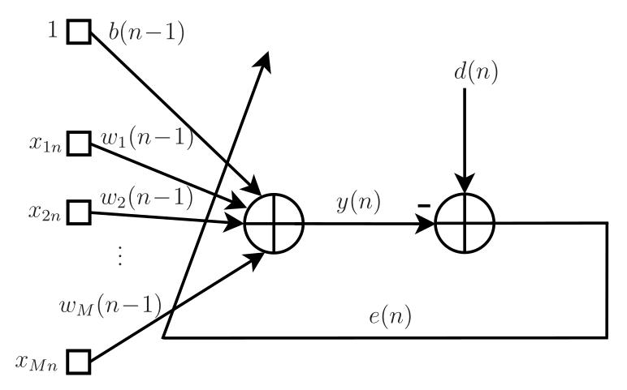
Fig. 4 Fluxo de sinal do algoritmo LMS.¶
Exemplo de classificação com o LMS¶
Considere o exemplo de classificação das “meias-luas” da Fig. 5. A meia-lua chamada de “Região A” está posicionada simetricamente em relação ao eixo \(y\), enquanto a meia-lua chamada de “Região B” está deslocada de \(r_1\) à direita do eixo \(y\) e de \(r_2\) abaixo do eixo \(x\). As duas meias-luas têm raio \(r_1\) e largura \(r_3\) idênticos. A distância vertical \(r_2\) que separa as duas meias-luas é ajustável e medida em relação ao eixo \(x\). Para \(r_2>0\), quanto maior o valor de \(r_2\), maior a separação entre as meias-luas. Já para \(r_2<0\), quando mais negativo for \(r_2\), mais próximas ficam as meias-luas.
{kind=link}
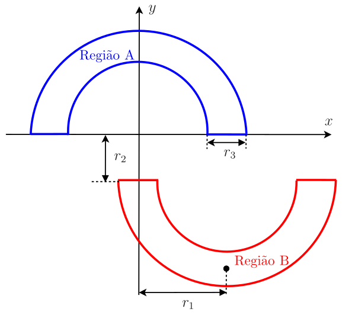
Fig. 5 O problema de classificação das meias-luas.¶
O conjunto de treinamento consiste em 1000 pontos, 500 pertencentes à Região A e 500 à Região B. Esses pontos são sorteados aleatoriamente. Assim, os pontos da Região A são sorteados considerando
em que \(\theta\) é uma variável aleatória uniformemente distribuída no intervalo \([0,\;\pi]\) e \(\rho\) é outra variável aleatória uniformemente distribuída no intervalo \([r_1-r_3/2,\;\;r_1+r_3/2]\). Para essa região, considera-se que o sinal desejado é igual a um, ou seja, \(d=1\). Para gerar os pontos da Região B, basta considerar os deslocamentos, ou seja,
e \(d=-1\) como sinal desejado. O conjunto de teste consiste em 2000 pontos, 1000 pontos de cada região, gerados de forma independente do conjunto de treinamento.
Para \(r_1=10\), \(r_2=1\) e \(r_3=6\), considerou-se o algoritmo LMS com passo \(\eta=10^{-4}\) e \(M=2\). Neste caso, não foi considerado o bias. Os dados de treinamento estão mostrados na Fig. 6. Na Figura Fig. 7, são mostrados a saída do algoritmo, o erro quadrático em dB e os pesos ao longo das iterações. São mostrados também os pesos da solução de Wiener (retas tracejadas em vermelho). É possível observar que, como esperado, os pesos do algoritmo LMS se aproximam da solução de Wiener, mas não convergem exatamente para ela. A saída do LMS no treinamento não mostra uma separação clara entre os dois valores possíveis para o sinal desejado (\(\pm 1\)). Apesar disso, é possível verificar na Fig. 8 com os dados de teste que há apenas uma pequena quantidade de dados da Região A que foram classificados erroneamente como pertencentes à Região~B, o que leva a uma taxa de erro de aproximadamente 2,5%. Considerando os pesos da última iteração do LMS (\(n=1000\)), obtém-se a solução “linear” dada pela reta de separação das regiões, mostrada na Fig. 8.
{kind=link}
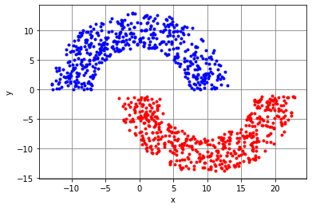
Fig. 6 O problema de classificação das meias-luas (\(r_1=10\), \(r_2=1\) e \(r_3=6\)). Dados de treinamento (\(N_t=1000\)).¶
{kind=link}
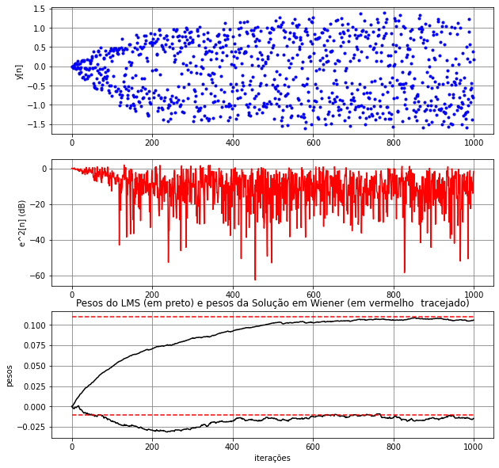
Fig. 7 Algoritmo LMS (\(M=2\), \(\eta=10^{-4}\)): saída do algoritmo, erro quadrático em dB e pesos ao longo das iterações. As retas vermelhas tracejadas representam os valores dos pesos da solução de Wiener.¶
{kind=link}
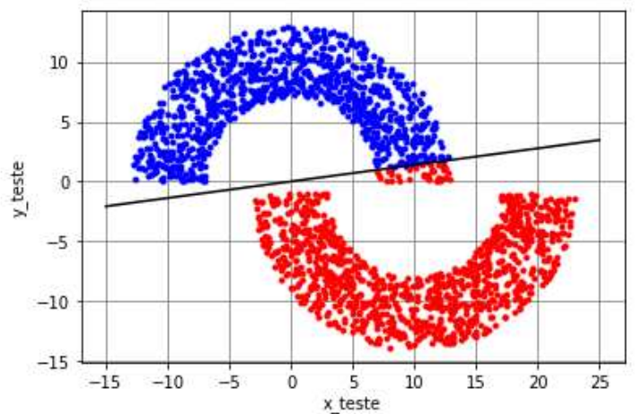
Fig. 8 O problema de classificação das meias-luas (\(r_1=10\), \(r_2=1\) e \(r_3=6\)). Dados de teste (\(N_{\rm teste}=2000\)) e reta de separação das duas regiões obtida com o LMS (\(M=2\), \(\eta=10^{-4}\)).¶
Ao diminuir o passo do algoritmo LMS para \(\eta=10^{-5}\), é possível observar na Fig. 9 que o algoritmo tem uma convergência mais lenta. Neste caso, foram considerados \(N_t=10^4\) dados de treinamento para que o algoritmo atingisse o regime permanente. Em contrapartida, a solução do algoritmo se torna mais próxima da de Wiener, como esperado. Assim, o projetista deve sempre ter em mente o compromisso entre passo de adaptação e precisão da solução. Apesar de mais precisa, a solução atingida ainda leva a erros na classificação como ocorre na Fig. 8.
{kind=link}
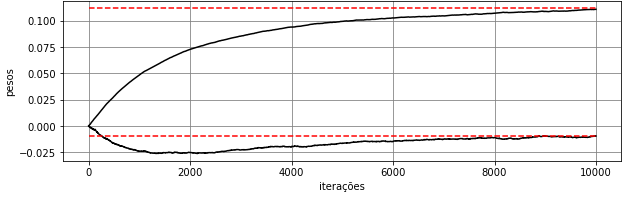
Fig. 9 O problema de classificação das meias-luas (\(r_1=10\), \(r_2=1\) e \(r_3=6\)). Algoritmo LMS (\(M=2\), \(\eta=10^{-5}\)): pesos ao longo das iterações. As retas vermelhas tracejadas representam os valores dos pesos da solução de Wiener¶
Considerando agora \(r_2=-4\), as meias-luas se tornam mais próximas, o que faz com que o algoritmo LMS chegue a uma solução que leva a mais erros: pontos da Região~A são classificados erroneamente como pertencentes à Região~B e vice-versa, como é possível observar na Fig. 10. Neste caso, a taxa de erro aumenta para aproximadamente 12%. Para se obter uma solução sem erros para \(r_2=-4\), é necessário considerar um classificador não linear.
{kind=link}
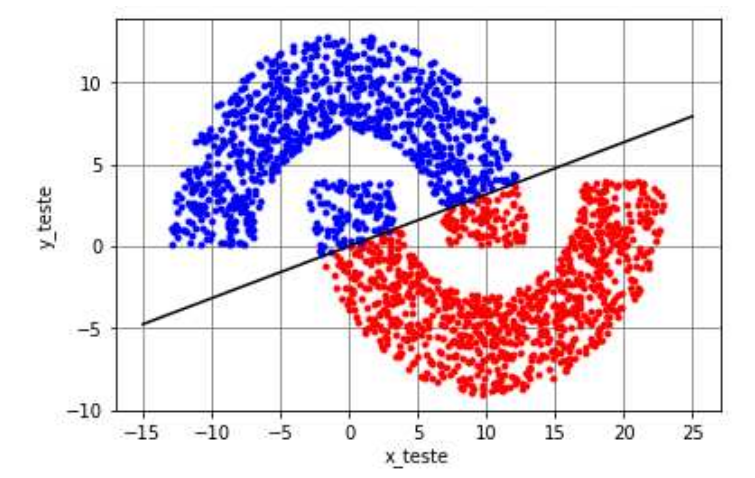
Fig. 10 O problema de classificação das meias-luas (\(r_1=10\), \(r_2=-4\) e \(r_3=6\)). Dados de teste (\(N_{\rm teste}=2000\)) e reta de separação das duas regiões obtida com o LMS (\(M=2\), \(\eta=10^{-4}\)).¶
Época, batch, mini-batch e iteração¶
Em diversas aplicações, o banco de dados é limitado. Esse é o caso, por exemplo, do problema de classificação de arritmias cardíacas utilizado sinais de eletrocardiograma (ECG). A aquisição de novos sinais deve seguir o padrão do banco de dados existente: os sinais precisam ser amostrados com a mesma frequência, os sensores devem ser os mesmos, o exame deve seguir o mesmo protocolo, etc. Vamos supor que seja possível garantir o mesmo padrão de aquisição dos sinais. Depois de serem adquiridos, os novos sinais de ECG precisam ser classificados por especialistas. Para manter o padrão, é ideal ter os mesmos especialistas que trabalharam na classificação dos sinais do banco de dados existente. Dá para notar que o aumento de alguns bancos de dados é complexo. Deve ser por isso que o banco de dados de ECG do MIT-BIH (Massachusetts Institute of Technology - Boston’s Beth Israel Hospital Arrhythmia Database) não recebe novos sinais desde 1980.
O que fazer quando a quantidade de dados é limitada e insuficiente para possibilitar a convergência dos algoritmos no treinamento? A solução é utilizar os dados de treinamento mais de uma vez. O treinamento realizado com o conjunto completo dos dados é chamado de época. Os algoritmos podem levar várias épocas até convergir. Como os dados utilizados em cada época são os mesmos, para gerar diversidade entre épocas, os dados de treinamento são misturados antes de se iniciar uma nova época.
O ajuste dos pesos do algoritmo LMS, descrito na Tabela 1, ocorre de maneira estocástica. O gradiente da função custo é estimado de maneira instantânea, a cada dado de treinamento. Assim, considerando uma época, haverá \(N_t\) atualizações dos pesos do LMS e o algoritmo minimiza o erro quadrático instantâneo, ou seja, \(\widehat{J}_{MSE}(\mathbf{w}(n-1))=e^2(n)\). Cabe definir aqui o conceito de \textbf{iteração}. A iteração do algoritmo ocorre toda vez que os pesos são atualizados. No caso estocástico, temos \(N_t\) iterações. Note que neste caso, o índice \(n\) coincide com iteração, pois o vetor de pesos é atualizado a cada \(n\), ou seja, a cada dado de treinamento. Essa forma de atualização estocástica é útil em problemas de tempo real, uma vez que a cada dado de entrada se deseja ter o dado de saída correspondente com o menor atraso possível. Em cancelamento de eco acústico, por exemplo, é essencial que isso ocorra para não gerar atrasos indesejados no sinal de voz. Neste tipo de aplicação, o treinamento ocorre junto com a inferência, ou seja, a saída e o erro calculados no treinamento são utilizados para atualizar os pesos e ao mesmo tempo para se obter a estimativa ou classificação desejada. No entanto, problemas de tempo real não são a maioria entre os problemas de aprendizado de máquina.
Em aprendizado de máquina, geralmente não estamos interessados em fazer a inferência durante o treinamento. A saída e o erro são utilizados no treinamento apenas para atualizar os pesos do algoritmo. Depois do treinamento, fixam-se os pesos para então se fazer a inferência e testar o classificador ou regressor. Por isso, vamos agora analisar outro caso extremo, em que todos os dados de treinamento são utilizados para estimar o vetor gradiente. Neste caso, o vetor de pesos será atualizado apenas uma vez a cada época. Portanto, teremos apenas uma iteração por época. Vamos supor que o vetor de pesos do LMS acabou de ser atualizado no final da época \(k-1\), ou seja, dispomos de \(\mathbf{w}(k-1)\). Assim, ele será atualizado novamente apenas no final da época \(k\). Durante a época \(k\), estima-se o vetor gradiente como
Esse gradiente deve ser então utilizado no final da época \(k\) para atualizar \(\mathbf{w}(k-1)\), ou seja,
Na sequência, o vetor \(\mathbf{w}(k)\) é utilizado para estimar o gradiente na época \(k+1\) e assim sucessivamente. Essa forma de atualização do vetor de pesos é chamada de modo batch. Neste caso, o algoritmo LMS busca minimizar em cada época a seguinte aproximação da função custo:
em que \(k=1,2,\cdots,N_e\), sendo \(N_e\) o número de épocas.
Cabem aqui algumas observações:
O treinamento em modo batch não é utilizado em aplicações de tempo real, pois gera um atraso inaceitável em aplicações desse tipo.
O índice \(n\) neste modo de treinamento não representa iteração e sim a posição do dado. Dessa forma, para \(n=5\) temos \(\mathbf{x}(5)\), que representa o quinto dado do conjunto de treinamento, que por sua vez, contém ao todo \(N_t\) dados.
Como os dados são misturados de uma época para outra, o vetor \(\mathbf{x}(5)\) da época \(k\) pode ser o vetor \(\mathbf{x}(200)\) da época \(k-1\).
Na formulação anterior, a iteração foi representada por \(k\), que coincide com as épocas do treinamento.
Dadas essas observações, na formulação do modo de treinamento batch, é mais conveniente usar a notação matricial, similar à da regressão linear multivariada. Assim, definindo-se na iteração (ou época) \(k\) os vetores
e a matriz
pode-se calcular o vetor de erros \(\mathbf{e}(k)\) como
e a estimativa do vetor gradiente como
Essa estimativa do gradiente leva à seguinte atualização dos pesos:
Com essa notação, a aproximação da função custo que o LMS busca minimizar neste modo pode ser reescrita como
Como o treinamento em modo batch não é utilizado em aplicações de tempo real e todos os dados de treinamento estão disponíveis, é mais eficiente atualizar os pesos de forma matricial, o que permite que as contas sejam feitas em paralelo. Na formulação não matricial, o erro \(e(n)=d(n)-\mathbf{x}^{{\rm T}}(n)\mathbf{w}(k-1)\) é calculado para cada dado de treinamento e utilizado no cálculo \(e(n)\mathbf{x}(n)\) para estimar o gradiente em um loop, o que torna o cálculo não eficiente.
Ainda é possível encontrar uma solução intermediária. Considere que, em toda época, os dados de treinamento sejam divididos em conjuntos de tamanho \(N_b<N_t\), que é chamado na literatura de tamanho do mini-batch. Neste caso, teremos \(\lfloor N_t/N_b \rfloor\) conjuntos de dados a cada época\footnote{Considera-se o arredondamento para baixo para que o número de conjuntos de dados por época seja sempre inteiro. Assim, por exemplo, se \(N_t=1233\) e \(N_b=50\), considera-se \(\lfloor Nt/N_b \rfloor=24\) conjuntos de dados por época. Como os dados são misturados a dada época, os 33 dados desprezados em uma determinada época aparecerão em outras.}. Considere que o algoritmo utilize cada um desses conjuntos para estimar o vetor gradiente e com essa estimativa atualiza os pesos. Dessa forma, os pesos serão atualizados \(\lfloor N_t/N_b \rfloor\) vezes por época, a cada \(N_b\) dados de treinamento. Em outras palavras, o algoritmo terá \(\lfloor N_t/N_b \rfloor\) iterações por época. Apesar dos pesos serem atualizados mais vezes por época que no modo de treinamento batch, o modo mini-batch também não é usado em aplicações de tempo real, o que faz com que a formulação matricial seja mais eficiente. Assim, vamos definir na iteração \(\ell\) os vetores
e a matriz
em que \(\ell=0, 1, 2, \cdots, \lfloor N_t/N_b \rfloor-1\). Utilizando essas definições, o vetor de erros é dado por
e a estimativa do vetor gradiente por
Essa estimativa do gradiente leva à seguinte atualização dos pesos:
Por fim, a aproximação da função custo que o LMS busca minimizar a cada época no modo mini-batch pode ser reescrita como
Observe que \(N_b=1\) leva ao modo de treinamento estocástico e \(N_b=N_t\) ao modo batch. É muito comum na literatura usar o modo mini-batch, já que se obtém uma melhor estimativa do gradiente e consequentemente uma melhor precisão para se alcançar o mínimo da função custo em comparação com o caso estocástico e um menor custo computacional em comparação com o modo batch. A versão do LMS com mini-batch está na Tabela 2.
Inicialização:
|
Para \(k=1,2,\ldots, N_e\), calcule:
|
Exemplo do LMS nos três modos de treinamento¶
Para exemplificar os três modos de treinamento do LMS, vamos considerar a identificação do seguinte sistema
Como entrada, considerou-se um ruído branco gaussiano, com média zero e variância unitária. Uma sequência com \(N_t\) amostras desse sinal é gerada, ou seja,
Neste caso, não é necessário o viés e apenas dois pesos são suficientes para identificar o sistema. Dessa forma, dada essa sequência de entrada, podemos organizar as amostras na matriz
Cada linha dessa matriz representa um dado de treinamento do algoritmo. O sinal desejado é calculado como
em que \(n=0, 1, 2, \cdots, N_t-1\), \(v(n)\) é um ruído de medida, que também é ruído branco gaussiano, com média zero e variância \(\sigma_v^2=0,01\). Observe que para cada linha da matriz \(\mathbf{X}\) temos um valor de sinal desejado, que é calculado a partir das amostras de cada linha e da amostra do ruído \(v(n)\).
Primeiramente, vamos considerar o algoritmo LMS no modo de treinamento estocástico com \(\eta=0,25\), \(N_t=500\), \(N_e=1\) e \(N_b=1\). Os pesos ao longo das iterações estão mostrados na Figura~\ref{fig:We}. Pode-se observar que os pesos se aproximam dos valores \(2\) e \(-3\), mas como a estimativa do gradiente é instantânea, ocorrem variações em torno desses valores ótimos. No caso, como consideramos apenas uma época, temos 500 iterações que coincide com o número de dados de treinamento.
{kind=link}
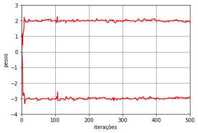
Fig. 11 Pesos do algoritmo LMS no modo de treinamento estocástico (\(M=2\), \(\eta=0,25\), \(N_t=500\), \(N_e=1\) e \(N_b=1\)). Identificação do sistema \(\mathbf{w}^{\text{wiener}}=[\,2\;\;-3\,]^{\rm T}\) com \(\sigma_v^2=0,01\).¶
Vamos agora considerar o algoritmo LMS no modo de treinamento mini-batch com \(\eta=0,25\), \(N_t=500\), \(N_e=10\) e \(N_b=10\). Os pesos ao longo das iterações estão mostrados na Fig. 12. Pode-se observar que os pesos variam menos em torno dos valores ótimos em comparação com o caso estocástico. Isso ocorre, pois a estimativa do gradiente é feita a cada \(N_b=10\) dados do conjunto de treinamento. Como foram consideradas 10 épocas, temos \(N_e\lfloor N_t/N_b\rfloor=500\) iterações.
{kind=link}
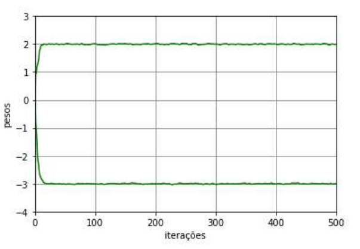
Fig. 12 Pesos do algoritmo LMS no modo de treinamento mini-batch (\(M=2\), \(\eta=0,25\), \(N_e=10\) e \(N_b=10\)). Identificação do sistema \(\mathbf{w}^{\text{wiener}}=[\,2\;\;-3\,]^{\rm T}\) com \(\sigma_v^2=0,01\).¶
Considerando agora o algoritmo LMS no modo de treinamento batch com \(\eta=0,25\), \(N_t=500\), \(N_e=40\) e \(N_b=500\), os pesos ao longo das iterações estão mostrados na Fig. 13. Como o gradiente é estimado a cada época com todos os dados de treinamento, os pesos convergem exatamente para os valores ótimos. Como foram consideradas 40 épocas, temos 40 iterações.
{kind=link}
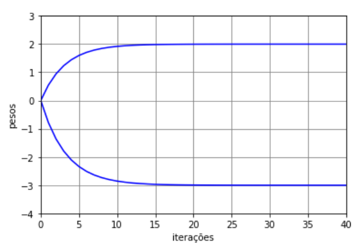
Fig. 13 Pesos do algoritmo LMS no modo de treinamento batch (\(M=2\), \(\eta=0,25\), \(N_t=500\), \(N_e=40\) e \(N_b=N_t=500\)). Identificação do sistema \(\mathbf{w}^{\text{wiener}}=[\,2\;\;-3\,]^{\rm T}\) com \(\sigma_v^2=0,01\).¶
As trajetórias dos pesos do algoritmo LMS nesses três modos de treinamento está mostrada na Fig. 14. Pela trajetórias, é possível ver que o caminho do batch é mais direto e atinge exatamente a solução ótima. Já o caminho do mini-batch é menos direto e varia mais em torno da solução ótima. Por fim, o estocástico é o que mais varia ao longo do caminho e também quando se aproxima da solução ótima. Comparando esses três modos de treinamento, o modo mini-batch é o que apresenta o melhor compromisso entre custo computacional e precisão da resposta e por isso é o mais utilizado em aplicações de aprendizado de máquina.
{kind=link}
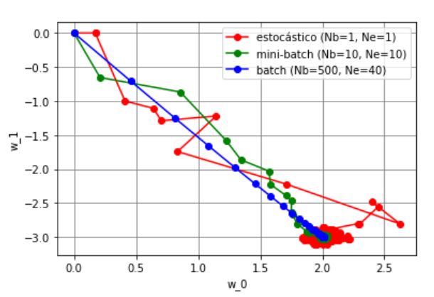
Fig. 14 Trajetória dos pesos do algoritmo LMS (\(M=2\), \(\eta=0,25\)) nos três modos de treinamento (\(N_t=500\)): estocástico (\(N_e=1\) e \(N_b=1\)), mini-batch (\(N_e=10\) e \(N_b=10\)) e batch (\(N_e=40\) e \(N_b=500\)). Identificação do sistema \(\mathbf{w}^{\text{wiener}}=[\,2\;\;-3\,]^{\rm T}\) com \(\sigma_v^2=0,01\).¶